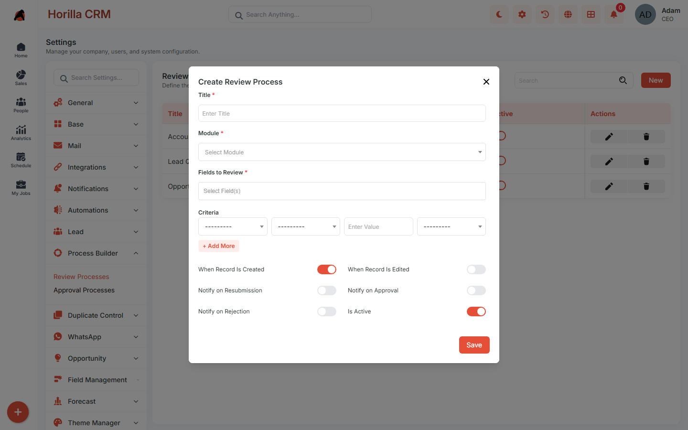

Overview
A Review Process defines a field-level approval workflow for the records of a module. Records that match the configured criteria are held back from the module's list view until the assigned approver has approved the fields under review.
Working a record that is already waiting — the jobs list and the field review — is covered in Review Jobs.
Review Process List
The list shows every review process with its Title, Module and Is Active status, along with Edit and Delete actions.
Create Review Process
Click New to open the creation form.

Fields
| Field | Description |
|---|---|
| Title | The name of the review process. |
| Module | The module the process applies to, for example Lead. |
| Fields to Review | The fields that require approval, for example Email and Contact Number. |
| Entry Criteria (optional) | Conditions deciding which records enter the process. Left empty, the process applies to every record in the module. |
| Notify on Resubmission | Notifies the approver when the record owner resubmits the record. |
| Notify on Approval | Notifies the record owner when the record is approved. |
| Notify on Rejection | Notifies the record owner when the record is rejected. |
| Is Active | Enables or disables the process. |
Process Detail View
- Click the process title to open its detail view.
- The detail view shows the Entry Criteria, the notification settings and the Fields to Review, with the review rules listed below them.
- Available actions: Add Rule and Edit Process.
Review Rules
Rules assign approvers to the records inside a process. A single process can hold several rules. To create one, click Add Rule in the detail view.
Fields
| Field | Description |
|---|---|
| Approver Type | Choose User or Role, depending on who should approve. |
| Condition (optional) | Defines which records the rule covers. Left empty, the rule applies to every record entering the process. Add further conditions with + Add More. |
Expected Behaviour
- Users can create review processes and link them to a module.
- Entry criteria determine which records enter the process; with no criteria, all records are included.
- A process can have multiple rules, each with its own conditions and approvers.
- Matching records appear in the assigned approver's Review Jobs queue.
- Approvers review each configured field separately and approve or reject it, with an optional comment.
- Rejected records stay hidden from the list view until they are resubmitted and approved.
- A record appears in the list view only once all required fields are approved.
- Notifications follow the toggle settings configured on the review process.